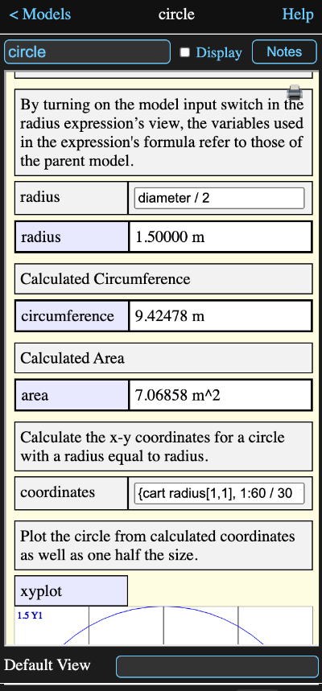

A model is simply a container for other calculation tools. These are displayed as icons on the model's diagram view.
Every Math Minion session has one root model, but it can contain other models, which in turn can also contain models.
Tapping on the icon for a model in the diagram will switch the diagram and information view to that of the child model.
You can return to the parent model by tapping the back button at the upper left of the diagram or model information view.
The name space of the model is completely independent of that of the parent model or any other model. This means that models can contain tools with the same names as tools in other models.
Models can only communicate with other models by means of expressions that have been designated as input and/or output. This is done by means of the check boxes on the expression information view.
An input expression operates in the namespace of the parent model, but its result is available in its containing model. This means the formula entered into an input expression can only reference tools in the parent, but its result can be used by other tools in its own model.
The result of an output expression can be accessed by formulas in the parent model by appending a dot and its name to its model name. Thus if an output expression called "result" was in a model called "calc", then a formula in a tool in the model containing "calc" could reference "result" as:
calc.result
The information view for the circle model from the Getting Started session looks like this:
When first created, the information view for a model will only contain the name and notes fields, but as you add tools to the model up to three sections will appear as in this example. The tools the model contains are listed in the appropriate sections:
Input and output sections will show the name, formula and a result summary for each expression, but the internal tools section only shows the tool type and tool name.
In all cases tapping on a tool row, other than inside an input's formula field, will show that tool's information view and select its icon on the diagram. If the selected tool is a model the diagram will switch to showing that model. You can use the back button at the top left to return to the original model information view.
The order that tools are displayed within each section is determined by their horizontal position on the model diagram, with ties being determined by the vertical position.
It is possible to set a specific tool in the model to always be displayed in the information view when the model is first opened. Enter the name of this tool in the Index Tool input field at the bottom of the information view.
In the model above, the Htmlpage Circle_Overview will appear whenever the circle model is entered. The back button at the upper left of the information view can be used to return to the model's informaton view.
Empty the field 1f you wish to return to having only the model information displayed when the model is first opened,
Parameters can be accessed with the form a.b where a is the model and b is the parameter
As described above, all expressions contained in the model that have their output switch on are available as formula parameters.
If the value of the expression is a reference to another tool, then that tool's parameters will be available by extending the dot notation. For instance, let's say a model named "m" has an output expression named "date" which has a formula:
table
where "table is the name of a data table, which has a column named "Date". Then
m.table.date
would return an array with that column's contents.